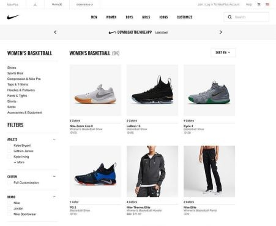
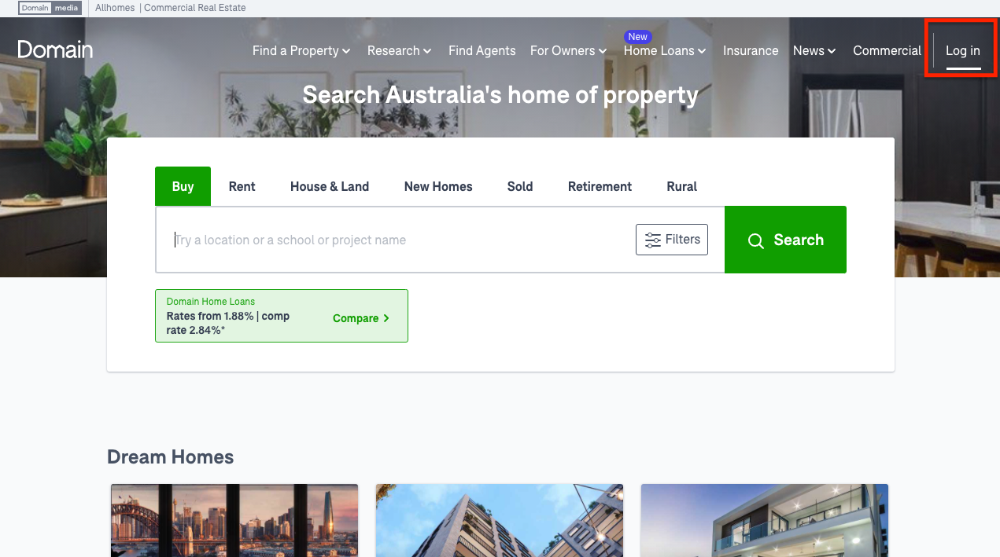
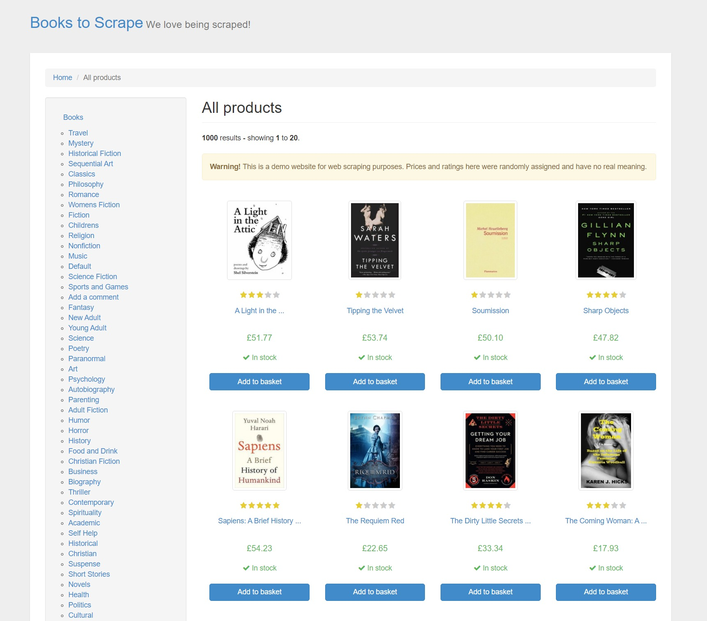

Nike
Scrapy&Selenium

This repository contains a web scraping project using Scrapy and Selenium to extract clothing and male shoe data from the Nike website.
The Nike website employs JavaScript for rendering its content, which necessitates the use of Selenium Chrome WebDriver to obtain the page
source. Subsequently, Scrapy selectors are utilized to scrape the desired data from the HTML. Click image to view.
IMDb
Scrapy
This repository contains the code and data for scraping the IMDb website's Top 250 movies using the Wayback Machine.
The data collected includes movie title, year, duration, movie link, genre, and rating. I used Scrapy to crawl through the IMDb website's archived pages on the Wayback Machine.
The spider followed various links to extract data for each movie. Click image to view.
Sydney Region Properties
Scrapy

This project involves web scraping commercial real estate listings from the Domain.com.au website using the Scrapy framework.
The scraped data includes the name of the apartment, location, description, agent contact, and website. Click image to view.
Live Coin
Scrapy&Selenium
This project utilizes web scraping techniques to extract Russian coin data from the livecoin.net website using the Wayback Machine.
The website's content is rendered using JavaScript, requiring the use of Selenium's ChromeDriver to obtain the dynamic page source.
The Scrapy framework is then employed to parse the HTML and extract the necessary data.Click image to view.
Collegessimply.com
Selenium
This repository contains Python scripts for scraping data from the Collegesimply.com website using Selenium. The data scraped includes college name, location,
graduation rate, and enrollment number. The scraped data is then written into a CSV file for further analysis. Click image to view.
Starbucks careers.api
Request
This repository contains a Python script to scrape job vacancies from the Starbucks Careers API. The script utilizes the requests library to fetch data from the API endpoint, then parses the response into JSON format.
The JSON data is normalized into a pandas DataFrame using pd.json_normalize, and finally, the collected data is saved into a CSV file. Click image to view.
Homes.com
Scrapy&Selenium
This project aims to scrape agent details from the Homes.com website using Scrapy and Selenium. The website renders its content with JavaScript,
making it necessary to use both Scrapy and Selenium to ensure accurate data extraction.The objective of this project is to collect information about real estate agents, including the name of the agency, the first and last name of the agent,
agent phone number and email, address, city, and price of listings. Click image to view.
BooksToScrape
Scrapy

This project demonstrates web scraping and image downloading from the BooksToScrape website using Scrapy,
a powerful web crawling and scraping framework in Python.The goal of this project is to extract data such as title, price, availability, image URL, and book links from the BooksToScrape website. The extracted data is saved in a JSON file for further analysis or usage. Additionally, a
Scrapy spider is created to download the images of all books listed on the website. Click image to view.
Bitsavers.org
Scrapy
This project demonstrates how to scrape and download PDF files from bitsavers.org using Scrapy, a powerful web crawling and scraping
framework in Python.Bitsavers.org is a valuable resource for vintage computer documentation, including manuals, schematics, and technical documents in PDF format. This project aims to automate the process of scraping and downloading
these PDF files for archival or research purposes. Click image to view.
Stackdriver wikepedia page
Request
This project aims to provide insights on how I scraped data from the Stackdriver website, I scrapped valuable that like the company name, launch date, registration status and article refrence.
I also went ahead to save the scrapped data in a csv file. Click image to view.
Instagram profile
Request
This project aims to provide insights on how to scrape data from instagram profiles, usernames, profile pictures ,user bio info like numbers of post, number of followers, emails etc. I also built a fuction that key word search for
userprofile and hashtags, and a downloadpost function that scrapes and downloadpost. Click image to view.
Shopify website service
Selenium
This project aims to scrape data from websites of companies offering Shopify website services in the UK. The data collected includes the company name, category,
location, opening time, and website URL.Selenium was used to automate web browser interaction and data extraction and Python programming language used to write the scraping script.
Click image to view.
Glasses Shop.com
Scrapy
This repository contains a Scrapy project for scraping bestsellers eye glasses data from GlassesShop.com. GlassesShop is a brand that sells trending eye glasses, and this project aims to extract information about the bestsellers
eye glasses available on their website.The goal of this project is to collect data on the bestsellers eye glasses from GlassesShop.com using web scraping techniques. The data includes the name of the glasses, price, image, and link to the glasses.
Click image to view.